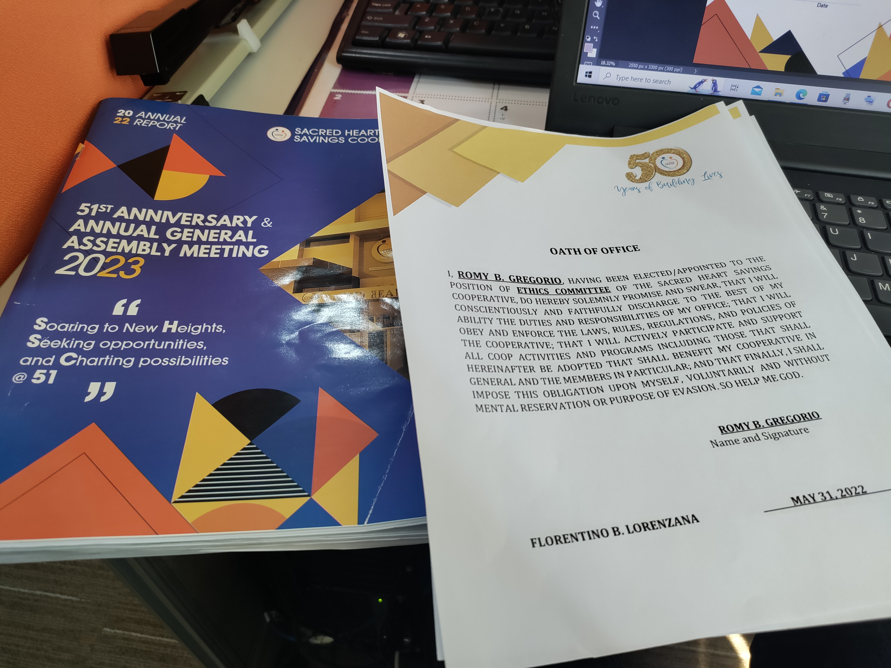
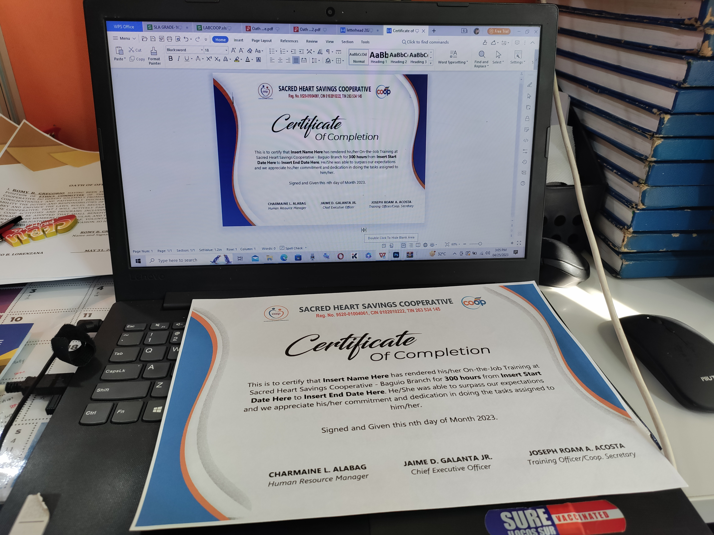

During our first day, we were assigned to clean the system units that were stashed at the IT Department office. We used paintbrushes to remove every debris and dust that was found inside the PC unit. We disconnected the fans and wiped them with clean cloth.


We then reconnected the wires and re-installed the fans in order to check if the PC was still working. After checking every connection of the parts to the motherboard and made it boot, the IT officer in charge told us to remove every part then install everything again. We cable managed the wires and managed to make the system boot.

We were also taught on how to wire RJ45 Ethernet Cables. We used a crimping tool. We learned about the wiring patterns, which are straight-through and crossover. Me and my pair used the straight-through pattern, and then tried testing it using a ethernet cable tester.

Using a heat press machine, we were taught how to manually print on t-shirts and designed outputs which was also printed out.

I was then tasked to design an oath of office with elements that utilizes their theme for this year. I used photoshop to edit and layout this project.

This was the reference that was given to me by the secretary which was their yearly design theme and their former oath of office format last year.

I also designed an editable certificate template for their OJT completers. I used WPS Office in this output in order for it to be easily editable by the secretary with the details and names of the OJT completers.

We also prepared giveaways and freebies for their upcoming programs, double-checked the contents of the bags, and organized to be ready to be packed.